For this installment, I have rewritten this project basically from scratch, to make use some of the things I've recently added to NQAE. The general structure is still the same, with two compute shaders doing the rendering and dithering work, with output handled by a single fullscreen triangle and a very simple vertex/fragment pair that samples a render texture. One of the biggest things I've been messing with is fractal distance estimators, most of which I have found on Shadertoy and in the #つぶやきGLSL tag on Twitter. There are some that I have gotten through discussions on discord, and I do not know the original author. I am putting together a compendium of the distance estimators that I've found, which I will be putting up on this site soon, using a standardized format of float de(vec3 p){...}. Many of them have come from Gaziya5 on Twitter, his work is incredible, his intuition for these shapes is very impressive.
I have made a number of improvements in the rendering - there is a significant line reduction in my raymarch code, and a general restructuring. I have added a lot of of features like soft shadows, depth fog, ambient occlusion, coloring via orbit traps, and the Blinn-Phong lighting model to create specular highlights.
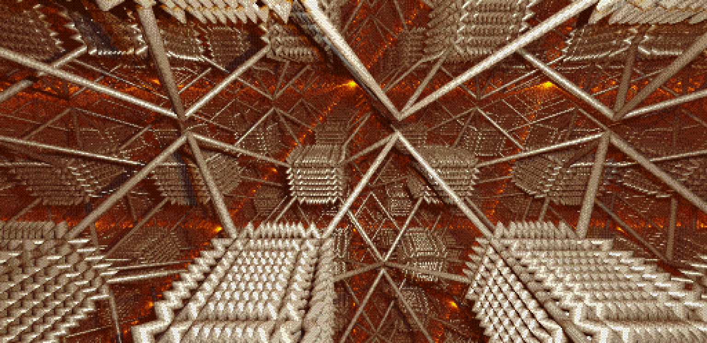Soft shadows are a neat feature, but they have some serious limitations. I have found that for more complex distance estimators, or ones for which the Lipshitz bound doesn't hold, you will get severe artifacts. In my renderer I have found a solution, given the hardware capability (which is a large given for complex scenes), can be to do several point light sources with sharp shadows, separated by a small distance. Using different colors for each of these lights can even give a little bit of a fake specular effect, like you can see above.
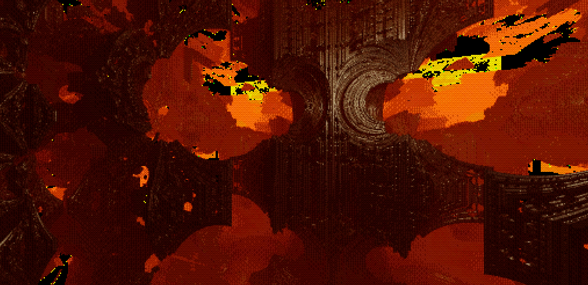Depth fog remains a work in progress, as I have not really found a good way to clamp the values effectively, which has created some odd artifacts like escaping rays going to black, as well as some issues on edges where the multisampled result is averaging using bad numbers and it creates some havok. You can see both of those issues here. For the most part though, I've had good luck with computing a depth term with some different falloff formulas, and then using this term as the parameter for mixing between the multisample result and the fog color. Tuning the depth term with a scale factor can make this more or less subtle.
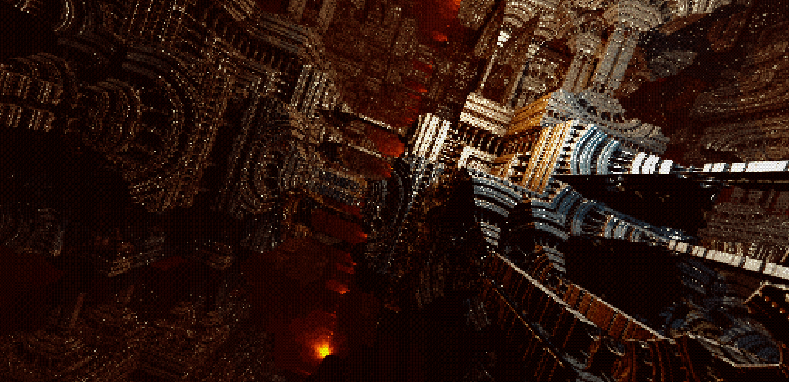Ambient occlusion has proven to be a valuable effect to accentuate surface features - the implementation I am using takes several samples of the distance estimator, up along the normal from the hit location. By looking at whether the distance metric is increasing or decreasing along this ray, you get some estimate of what the occlusion provided by the surroundings look like.
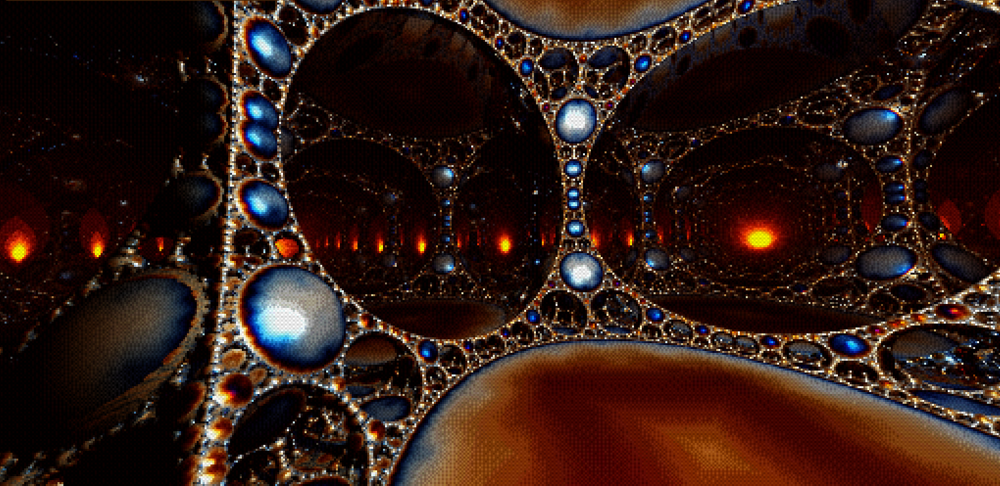Orbit trap coloring is an interesting technique. Many of these fractals operate by folding up the space in different ways, and this method looks at things like the distance of the transformed point location from the origin at each of these folding steps. I have seen some interesting artifacts come up while I was implementing this - because the same distance estimator is called several times (raymarching, lighting, ambient occlusion), and the escape value is kept as a global variable, ther are some interesting shadow-like artifacts, which you can see at the top of the image here. An easy fix for this is to cache the value after your initial raymarch hit.
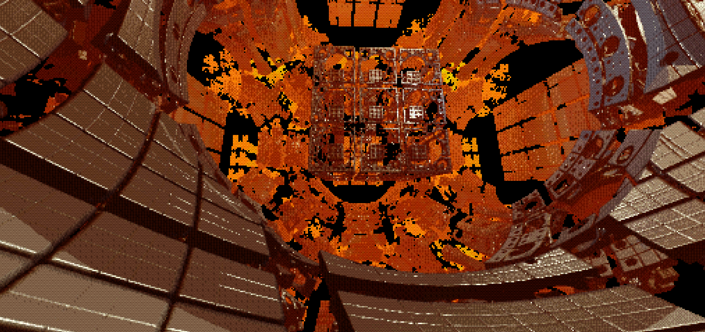Blinn-Phong lighting adds a lot to the scenes, as well, by creating specular highlights where a light source would be reflected into your eye. By varying the falloff exponent, you can create different types of material appearances, from dull surfaces like plastic to much sharper reflections, like you would see from metallic surfaces.
There are some changes to the dithering logic, as well. I am primarily using an exponential formula for applying the dithering now, rather than the bitcrush logic. I add the noise offset in the middle of this operation, so that it gets baked into the resulting color on a per-pixel basis. There are quite a few more colorspaces in use, and now I have a lot more different dither patterns, which each have their own character.
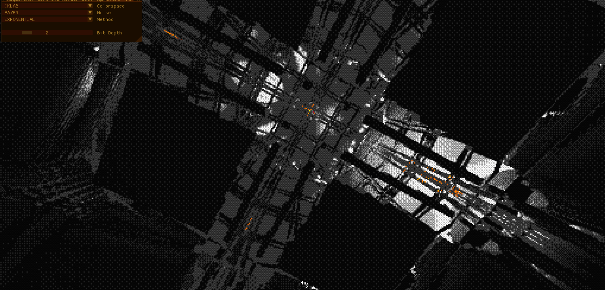The colorspace list now includes RGB, sRGB, XYZ, XYY, HSV, HSL, HCY, YPBPR, YCBCR, YCCBCCRC, YCOCG, BCH, OKLAB and ChromaMax. Each one scales differently when reducing to different bit depths, and you can find some very interesting effects by looking at the different options. I think the ChromaMax at a bit depth of 4 is my favorite, it creates a look very reminiscent to a VGA-palette. A lot of the pictures on this page are done with that setting.
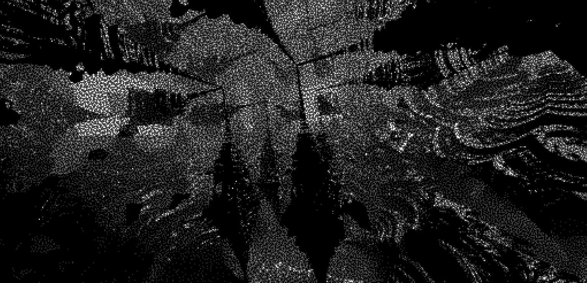The different dither patterns can also create some different looks, too. I find that I really like the Bayer pattern, but there are some other patterns - the ones I have implemented are Bayer, RGB blue noise, monochrome blue noise, uniform random noise, interleaved gradient noise, Vlachos, and some triangularly distributed variants of these. The picture above makes use of the monochrome blue noise pattern, which uses a single blue noise sample to offset each of the three color channels.
I think this is the most interesting part of this project. Experimenting with the different distance estimators has provided a very interesting testbed for the various rendering features that I have implemented. The code for these is often very concise, but also can become very expensive, when considering that they will be evaluated potentially many times per pixel.
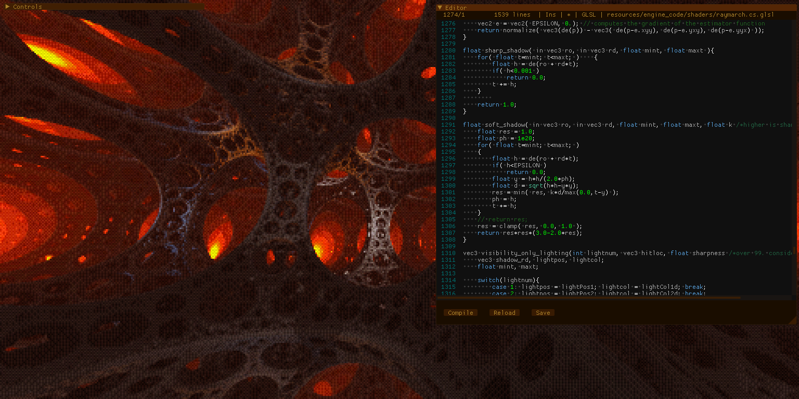
Experimentation is a lot easier with an in-engine editor for the raymarch shader, which allows runtime editing and recompilation of the shader. I have been having some stability issues with the project recently, so validating further distance estimators may have to be done via the Voraldo 1.2 User Shader. By using this standard format, float de(vec3 p){...}, it becomes very easy to drop these in and try different ones.
Many of the fractals I have found are variants of the Apollonian fractal, which is a sphere packing strategy that uses spheres of reducing radius. With minor tweaks, these infinite spaces of differently shaped pillars can be formed.
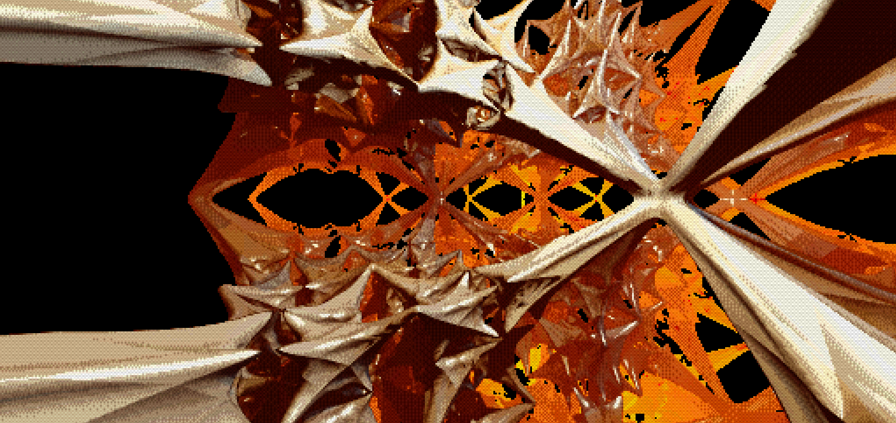There are, however, many different types, some of which create some very exotic forms. I will have the compiled list finished soon, which hopefully will prove to be a valuable resource. I look forward to seeing how these things are used - they can see usage in a realtime raymarching context, but I have been sharing them back and forth with Nameless on discord, who has been using raymarching-style intersection in an offline pathtracing context, like the images below. Using different union and intersection operators can create some very interesting effects, and they have been working with MIS techniques using different lighting models, and methods for volumetrics, as well.
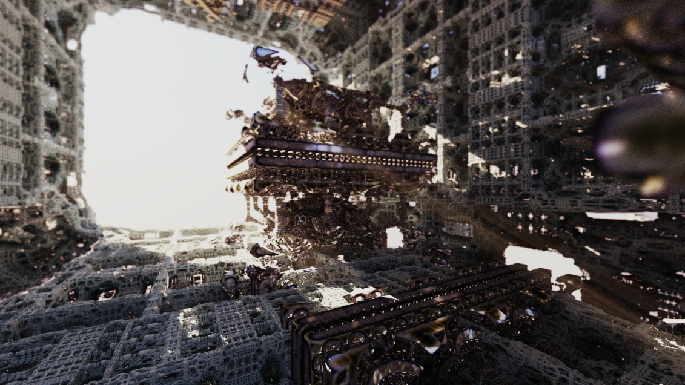 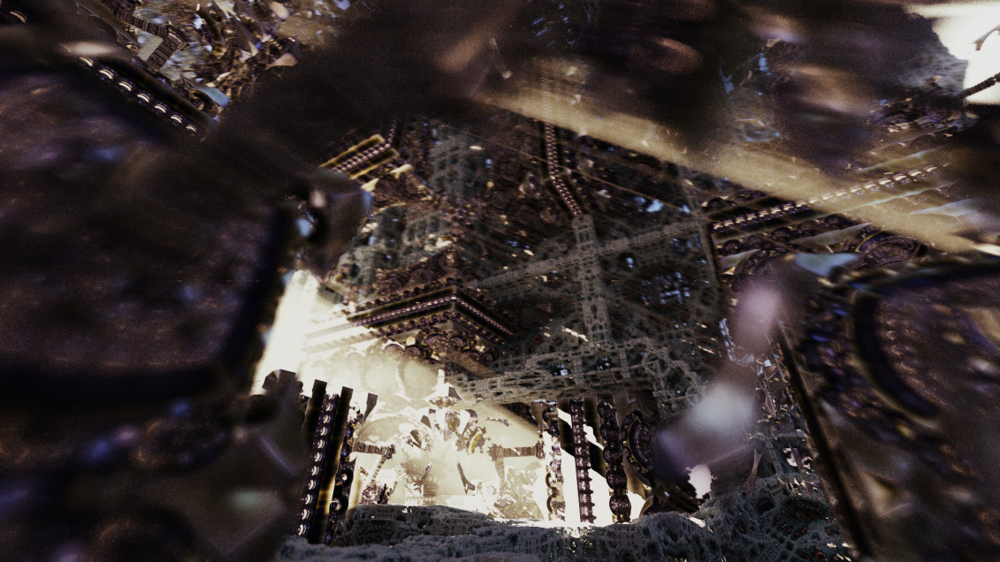 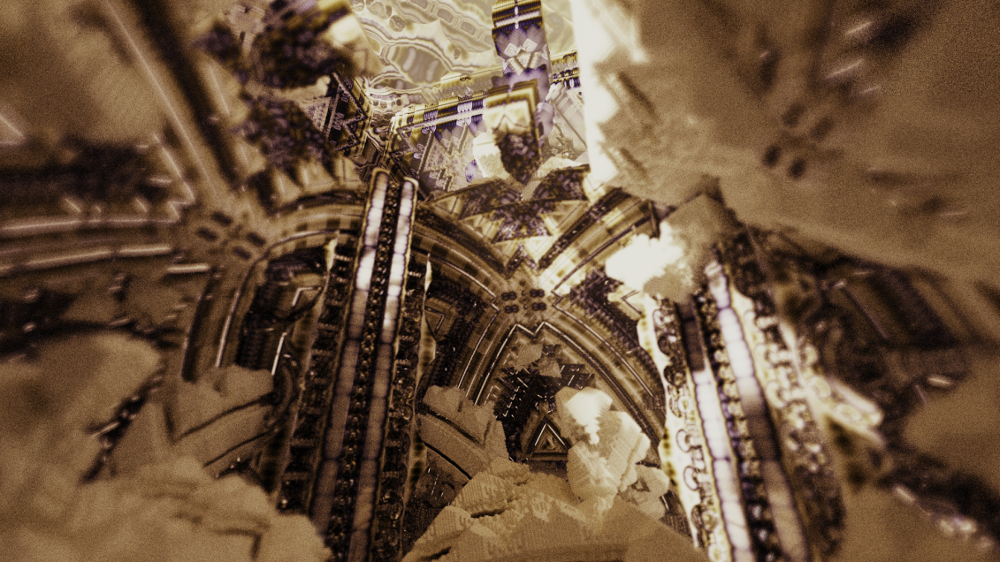Last updated 5/19/2021